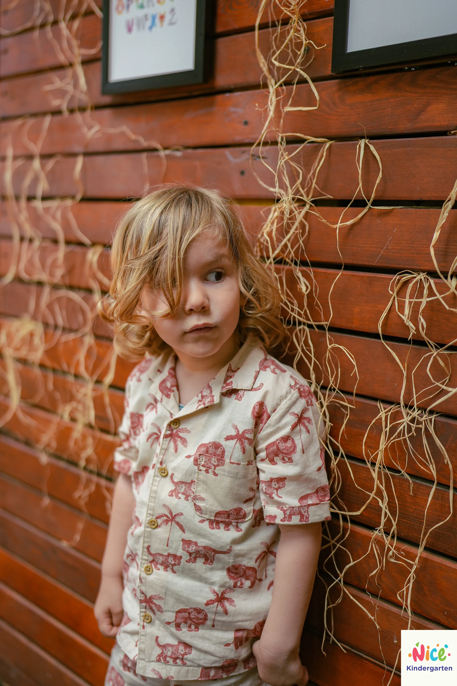

KARŞILAŞTIRMA
Sınıf İçi Doğal Çekim vs Kurgusal Stüdyo Çekimi
Tarih: 07 Nisan 2026 | Okuma Süresi: 2 Dakika

Son yıllarda velilerin yönelimi standartlaştırılmış "fon perdesi" pozlarından çok, çocuklarının okulun içindeki gündelik yaşamını anlatan belgesel tadındaki karelere kaydı.
Belgesel Tarzının Samimiyeti
Hamurla oynayan kirli eller, parmak boya ile birbirini boyayan gülücüklü yüzler her zaman kusursuz pozlardan daha çok tebessüm yaratır. Stüdyo flaşlarına gerek kalmadan, pencereden gelen organik ışık hüzmelerini kullanarak çekilen kareler çok sanatçıldır.
Ama Vesikalık ve Stüdyo Mecburiyeti
Ne kadar doğallığı savunsak da kurumsal veya resmi bir mezuniyet panosu için her öğrencinin arka fonunun birebir aynı olduğu stüdyo aydınlatmalarına mutlaka ihtiyaç duyarız. Ekibimiz okullara her iki sistemi de entegre sunmaktadır.